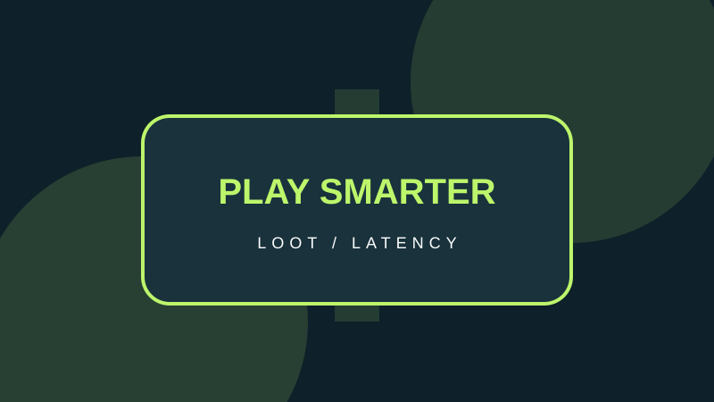
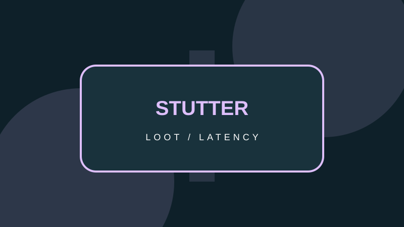
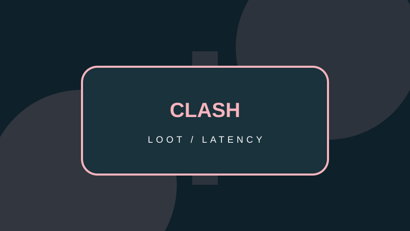

MORE GAME.
LESS GUESS.
Smart guides on gaming gear, performance, and the little tweaks that make every session better. No fluff. No paywalls. Just useful stuff.

Start here.
The guides we wish we had before buying gear or changing settings.


The latest playbook.

Stutter vs. Lag: Find the Real Bottleneck
Learn to distinguish frame-time spikes from network issues and troubleshoot the right system.
Read the guide
60 Hz vs. 120 Hz: Is the Upgrade Worth It?
Refresh rate, frame rate, response time, and the small details that shape motion clarity.
Read the guide
Brawl Stars: Win More by Playing the Objective
Practical positioning, teamwork and replay habits that work beyond any single meta.
Read the guide
Clash Royale: Six Habits to Improve Your Matches
Practice smarter elixir trades, calm defense and deliberate deck choices.
Read the guideGreat setups start with
good decisions.
Plan your gaming accessory budget and see where your money makes the biggest difference—before you start shopping.
Open the budget plannerLess scrolling.
More playing.
Whether you play on PC, console, or mobile, our mission is simple: clear answers that save you time, frustration, and money.
Get to know the site